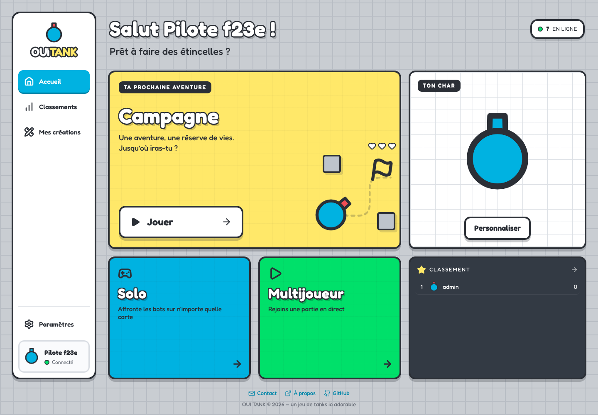
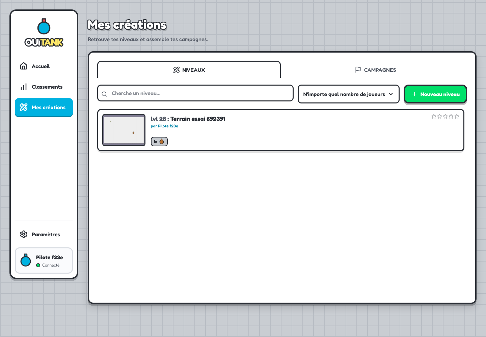
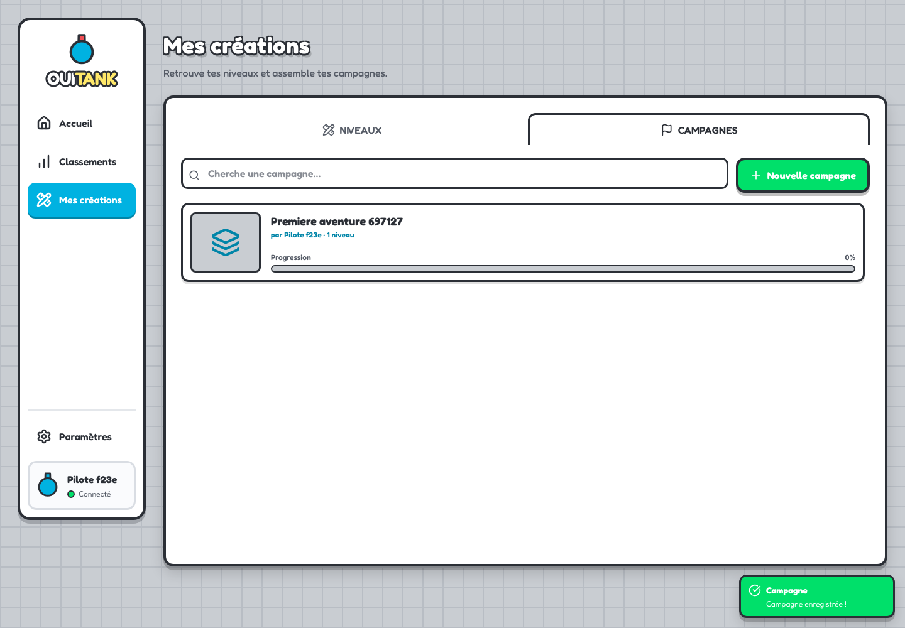
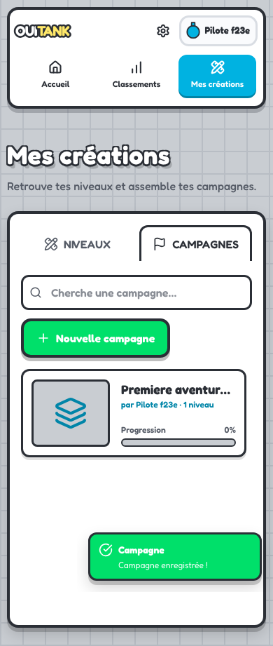
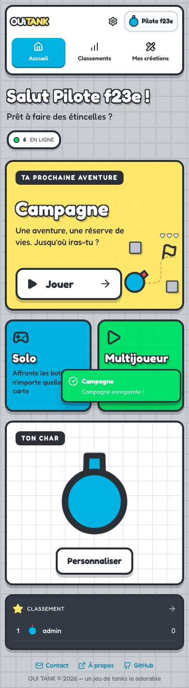

Accueil, Classements et Mes créations : les trois entrées principales. Paramètres et profil restent en bas.
Création, modification et test des niveaux dans un seul espace.
Les campagnes se trouvent dans le deuxième onglet. L’enregistrement ramène sur cet onglet.
Les trois entrées du menu restent lisibles sur téléphone.
Les modes Solo, Multijoueur et Campagne restent accessibles depuis l’accueil.